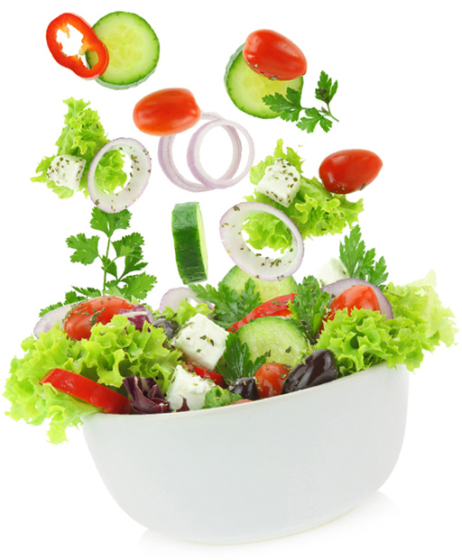

PORADNICTWO DIETETYCZNE DLA GRUP
Oferuję wykłady dla szkół, przedszkoli, ośrodków wczasowych, zakładów pracy itp.
Wykłady o tematyce żywieniowej skierowane do grupy słuchaczy.
Wykłady prowadzę u klienta (nie zapewniam miejsca wykładowego).
Czas szkolenia w zależności od tematyki i grupy słuchaczy.
Poniżej prezentuję niektóre z tematów:
Oferuję również warsztaty żywieniowe polegające na przygotowaniu posiłku wspólnie ze słuchaczami.
PORADNICTWO DIETETYCZNE DLA GRUP
Oferuję wykłady dla szkół, przedszkoli, ośrodków wczasowych, zakładów pracy itp.
Wykłady o tematyce żywieniowej skierowane do grupy słuchaczy.
Wykłady prowadzę u klienta (nie zapewniam miejsca wykładowego).
Czas szkolenia w zależności od tematyki i grupy słuchaczy.
Poniżej prezentuję niektóre z tematów:
- Zasady zdrowego odżywiania
- Żywienie w chorobach (wybrane choroby np. cukrzyca, miażdżyca, osteoporoza)
- Techniki przygotowywania potraw i ich wartość odżywcza
- Na co warto zwrócić uwagę podczas zakupów produktów spożywczych
- Żywienie dzieci
- Żywienie kobiet w ciąży i matek karmiących
- Żywienie dla dobrego samopoczucia
- Witaminy w diecie
- Rola składników odżywczych
- Żywienie osób starszych
Oferuję również warsztaty żywieniowe polegające na przygotowaniu posiłku wspólnie ze słuchaczami.